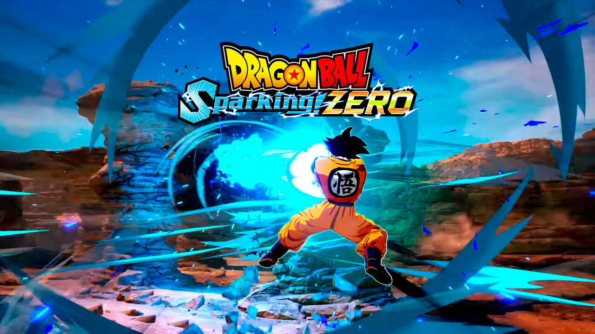
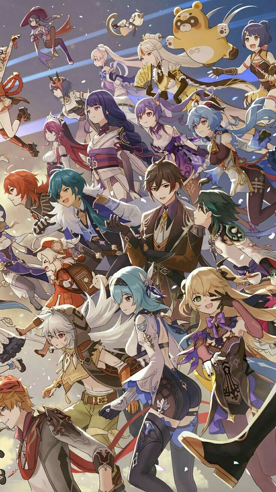
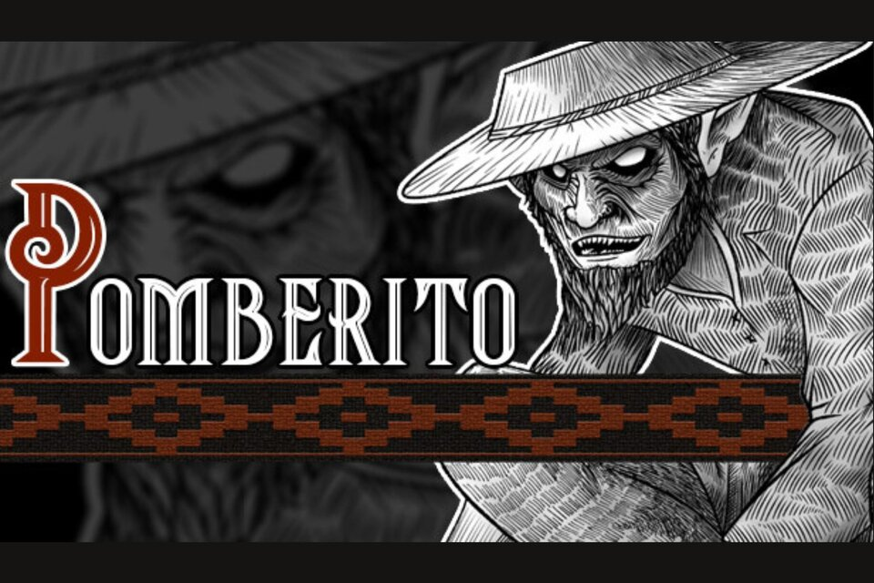

Últimas Noticias
Dragon Ball: Sparking! ZERO será jugable en este conocido evento
El evento EVO 2024 estará cargado de muchas sorpresas. Y ya se ha confirmado que Dragon Ball: Sparking! ZERO estará disponible como una demo jugable. La franquicia de Dragon Ball está más viva que nunca. Y es que, dentro de algunos meses, en octubre de 2024, se estrenará oficialmente el título Dragon Ball: Sparking! ZERO, el cual ya hemos probado y nos ha dejado muy buenas sensaciones. De hecho, podemos confirmar que es la perfecta continuación del clásico Dragon Ball Z: Budokai Tenkaichi 3. Aunque los fans no podemos contener las ganas que tenemos de disfrutarlo. Pero aún no hay noticias de una demo pública.
Fecha, contenido y novedades de Genshin Impact 4.8
HoYoverse ha compartido las novedades de la versión 4.8 de Genshin Impact, que llegará este mes como una actualización gratuita en PS5, PS4, PC, iOS y Android. El popular juego gratuito Genshin Impact, desarrollado por HoYoverse, ha lanzado la versión 4.8 titulada "¡Verano, dragón, un reino fantástico!", que estará disponible este mes. Esta actualización introduce Simulanka, un reino de tiempo limitado lleno de eventos, minijuegos y desafíos, y como de costumbre llega con nuevos códigos gratuitos.
Estudio argentino fue confirmado para desarrollar el nuevo juego de Metro, pero la información fue eliminada horas después
Aunque muchas veces suele creerse que los países Latinoamericanos no tienen un peso representativo en la industria de los videojuegos internacional, el esfuerzo de los desarrolladores ha permitido que uno de los más grandes sueños de todo un continente se vuelva realidad: el estudio argentino Nimble Giant está desarrollando el próximo juego de la saga Metro. Lamentablemente, horas después de la revelación, la información fue eliminada.
Así es "Pomberito", el videojuego de terror basado en la popular leyenda argentina
Dos jóvenes del sur del conurbano bonaerense están detrás de este proyecto, desarrollado por Lara The Pitbull. La iniciativa, que estará disponible en la plataforma Steam en poco tiempo, busca conectar a los jugadores con historias del folclore rural del noreste de nuestro país y la región sudamericana. En los últimos años, muchos argentinos se animaron a dar un paso en el desarrollo de videojuegos con perspectiva territorial, demostrando un claro avance en la soberanía tecnológica y digital. Ese es el caso de la desarrolladora Lara The Pitbull, cuya popularidad no deja de crecer en las redes desde que anunció su próximo lanzamiento por la plataforma de Steam: Pomberito, un videojuego basado en el personaje de la gran leyenda popular.